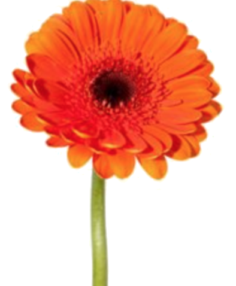
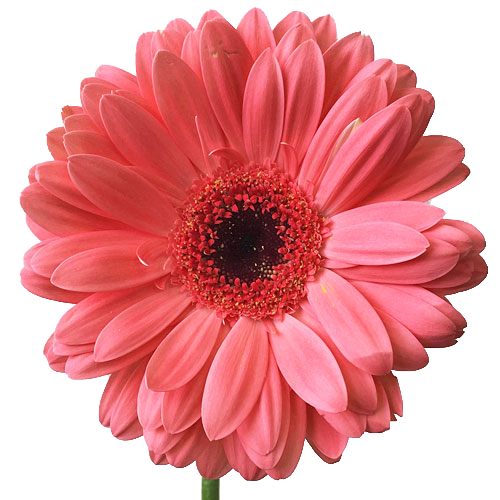
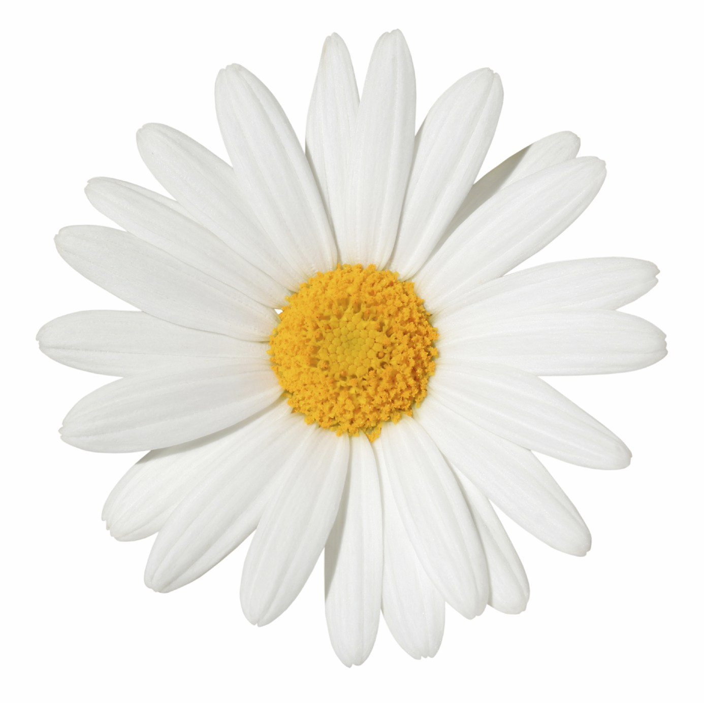
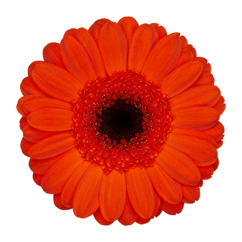

grid-column demo
Grid Container
.grid-container { display: grid; grid-template-columns: 1fr 2fr 1fr; grip-column-gap: 10px;}grid-template-columns can take inputs in px, em, fr (fraction) or auto (adjust based on content size).
Grid Column
.left { grid-column: 1 / 3;}
.left { grid-column: 1 / span 2;}
.right { grid-column: 3;}
applications




Image Treatments
Grid columns can be used to create compositions with images by placing them in columns.
Text and Proportions
A more traditional application of columns would be for dividing the page into sections for multiple texts to have space on the page at once.
Grid columns can be used to display one flowing text as well.


The wool of the dams could hardly be softer to the foot. The last of July the grass was still short and thick, as if it never shot up a stalk and produced seed, but always remained a fine, close mat.
They are apparently as copious and exhaustless as they were three centuries ago. Britain might well appropriate to herself the last half of Emerson's quatrain:—
Image and Text
Using text and images in the same grid to create interactions between them.
Full Bleed Image
Blocks of images can be created by filling entire columns with images. These methods can be nested to build up more complex layouts.
It is the favorite of all the poets, and when one comes to see it he does not think it has been a bit overpraised. Some flowers please us by their intrinsic beauty of color and form; others by their expression of certain human qualities: the daisy has a modest, lowly, unobtrusive look that is very taking. A little white ring, its margin unevenly touched with crimson, it looks up at one like the eye of a child.
IXBRITISH FERTILITY
In crossing the Atlantic from the New World to the Old, one of the first intimations the traveler has that he is nearing a strange shore, and an old and populous one, is the greater boldness and familiarity of the swarms of sea-gulls that begin to hover in the wake of the ship.
Thou unassuming Commonplace Of Nature, with that homely face, and yet with something of a grace, which Love makes for thee!
The New Englander who sees with evil forebodings the rapid falling off of the birth-rate in his own land, the family rills shrinking in these later generations, like his native streams in summer, and who consequently fears for the perpetuity of the race, may see something to comfort him in the British islands. Behold the fecundity of the parent stock!
Overlaying Grids
Overlaying two types of elements using the same grid. The images are on the third and fifth column while the text is on the second, fourth and sixth column. All the content spans two columns.